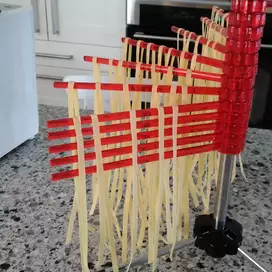

Noodles

Description
Easy, homemade noodles for two.
Ingredients
- 1 cup all-purpose flour
- 1 egg
- 1 pinch salt
Steps
- Mix all ingredients. Roll thin with flour, then roll like a jelly roll. Cut into 1/2 inch strips. Let dry.
- Drop into hot chicken broth. Boil for 15 minutes.